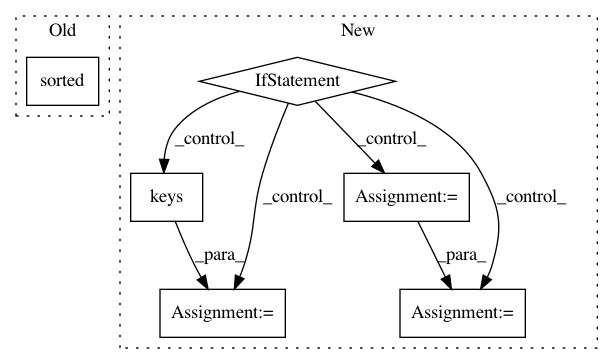

6284bb3b9a80de90d5b507bd16a61aba4340f4fb,tensorboard/plugins/core/core_plugin.py,CorePlugin,_serve_runs,#CorePlugin#Any#,133
Before Change
{runName: {firstEventTimestamp: 123456.789}}
// TODO(chihuahua): When running in database mode, query the Runs table.
run_names = sorted(self._multiplexer.Runs()) // Why `sorted`? See below.
def get_first_event_timestamp(run_name):
try:
return self._multiplexer.FirstEventTimestamp(run_name)
After Change
A werkzeug Response with the following content:
{runName: {firstEventTimestamp: 123456.789}}
if self._db_connection_provider:
db = self._db_connection_provider()
cursor = db.execute("""
SELECT
run_name,
started_time IS NULL as started_time_nulls_last,
started_time
FROM Runs
ORDER BY started_time_nulls_last, started_time, run_name
""")
run_names = [row[0] for row in cursor]
else:
run_mapping = self._multiplexer.Runs()
first_event_time_values = {
run_name: self._get_first_event_timestamp(run_name)
for run_name in run_mapping
}
run_names = run_mapping.keys()
// Why `sorted`? See below.
run_names.sort(key=first_event_time_values.get)
return http_util.Respond(request, run_names, "application/json")
def _get_first_event_timestamp(self, run_name):
Gets the first event timestamp for a run. Or infinity if not found.
In pattern: SUPERPATTERN
Frequency: 3
Non-data size: 6
Instances
Project Name: tensorflow/tensorboard
Commit Name: 6284bb3b9a80de90d5b507bd16a61aba4340f4fb
Time: 2018-02-22
Author: 4221553+chihuahua@users.noreply.github.com
File Name: tensorboard/plugins/core/core_plugin.py
Class Name: CorePlugin
Method Name: _serve_runs
Project Name: bokeh/bokeh
Commit Name: a6e3f06dff54fe4f34bf02a81e53852fa95b227d
Time: 2015-08-30
Author: nroth@dealnews.com
File Name: bokeh/charts/builder/bar_builder.py
Class Name: BarGlyph
Method Name: __dodge__
Project Name: tensorflow/transform
Commit Name: fdb21ea28fc513f118e1a8b06069f84c3f4c23bc
Time: 2019-09-19
Author: zoy@google.com
File Name: tensorflow_transform/beam/analyzer_cache.py
Class Name: WriteAnalysisCacheToFS
Method Name: expand